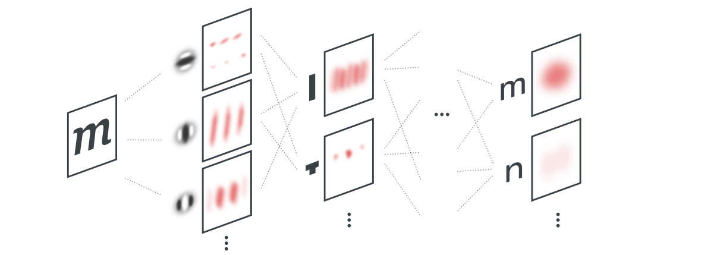
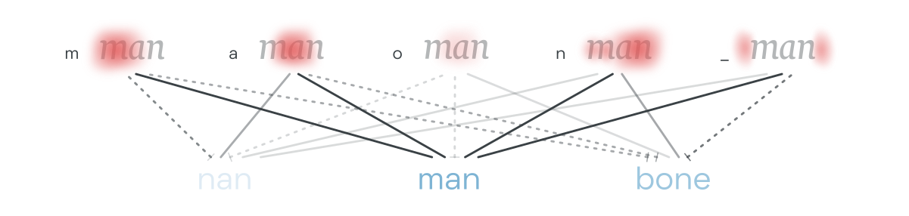
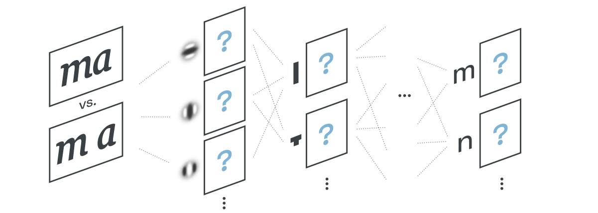

YinYangFit ☯
A model for automatic letterfitting, inspired by neuroscience

Acknowledgements
This research would not have been possible without funding from Google.
Abstract
Adjusting letter distances to be visually pleasing is a challenging and time-consuming task. As existing tools are too basic to reliably handle the infinite variety of typefaces, designers have to mostly rely on their intuitive judgment. The model presented here is the first one developed from basic principles in vision science and has been successfully fitted to existing, hand-fitted fonts using backpropagation. It is a first step towards an explanation of why we perceive letter pairs as too close or too far, regardless of the font style or even script.
Introduction
What is letterfitting? Letterfitting refers to the process of adjusting the distances between pairs of letters Or more broadly, between pairs of glyphs of any kind. during typeface design.  Red vertical bars show side bearings, blue vertical bar shows a negative kern. It’s often referred to as “spacing and kerning”, because pair distances are the sum of fixed amounts of space around every letter (so-called side bearings) and additional adjustment values for individual pairs (so-called kerns). Quality fonts often contain thousands of hand-kerned pairs that undergo weeks of testing and refinement.
Red vertical bars show side bearings, blue vertical bar shows a negative kern. It’s often referred to as “spacing and kerning”, because pair distances are the sum of fixed amounts of space around every letter (so-called side bearings) and additional adjustment values for individual pairs (so-called kerns). Quality fonts often contain thousands of hand-kerned pairs that undergo weeks of testing and refinement.
Why do we fit letters at all? Some would say that well-fitted type is simply the result of the designer’s intuition for beauty. Others have tried to appeal to the aesthetics of an “even colour”, i.e. a printed page with a uniform texture and no noticeable blobs of black or white. Meanwhile, Frank Blokland has argued See his PhD thesis. that font measurements are mainly a holdover from the early days of metal type, when the distances between letter stems were the result of practical considerations. None of these explanations have led to an automated letterfitting algorithm I’ve listed the most popular existing attempts in the appendix. that reliably reproduces the hand-tweaked pair distances in existing fonts of different styles.
My hypothesis is that all of the
This is by no means a revolutionary idea, Type legend Charles Bigelow recently compiled a comprehensive review of legibility studies, covering many important concepts including weight and optical sizing. yet for all of the empirical results produced by vision scientists, we still have no explanatory model that directly relates letter distances to legibility. Prototyping such a model is the objective of this project.
A simple model of legibility
To quantify legibility, we must understand how letters and words are perceived in our brains. Although many details are still under scientific dispute, a consensus has formed around a rough sketch of the process:
Visual processing: In the vision part of our brain, neurons respond to the presence of simple stripe-like patterns in the field of vision. These neurons combine to activate successive layers Here, “layer” is used in the deep-learning sense, not in the anatomical sense. of other neurons which detect increasingly complex shapes and eventually letters. Because the neurons’ effective receptive fields grow larger with each layer, only very vague information about each letter’s location remains at the letter-detecting layer. This idea was expressed most clearly in this article published in 2003, which continues to set the research agenda. The similarity to feedforward convolutional nets is not coincidental, and has naturally inspired ConvNet-based word detection experiments, but remember that our goal here is not to train a black-box neural net but to identify an explanatory model of the relationship between letter distances and legibility.

In this illustration, the first layer of neurons identifies stripe-like patterns of certain spatial frequencies and orientations. Those neurons, in turn, are wired up to other neurons, facilitating the detection of simple geometric features. After some layers, letters are detected.
This process applies to everything we see, not just text. Presumably, letter detectors occupy a similar place in our brains’ hierarchy as detectors of objects, such as teacups or airplanes. As a result of this agnosticism, not only letters are detected but also the gaps between them; after all, a gap is nothing but another stripe-like feature.
Semantic expectations: Having just read the words “The dog bites the”, the language part of your brain is already sizzling with activity that renders the neurons for “man” especially sensitive. Here, words already read are shown in red, candidates for the next word are shown in blue, previous discarded candidates are shown in gray. Darker shades of blue correspond to more frequently encountered words. Thick lines represent semantic relationships learned to be common; dashed lines represent lexical competitors (i.e. similar words).
Word individuation: For about half a second, waves of neural activity flash back and forth in search of the strongest connection between the vague information about letter locations on one side, This wonderfully lucid paper presents good arguments for an additional layer of “letter combination detector” neurons that respond to the presence of pairs of letters. and your knowledge of orthography, phonology, and semantic expectations (“man”, or perhaps “bone”?) on the other. There are several EEG studies on this subject, but this one is especially cool as it involves deep-brain stimulation of live human volunteers. About halfway into that half-second, the electrical spikes settle into a stable pattern as the most likely word picks up enough neural activity to enter your consciousness. Meanwhile, your eye has long moved on to the next word or two. And sometimes it has to jump back, because residual neural sensitivity from the identification previous words caused you to misread a word.

If the above description is correct, then good legibility simply means that the visual input strongly activates the right letter detectors—so if we can build a computational model of the visual processing circuitry described above, then we can test how differently-fitted letter pairs would affect the legibility:

This is all we need—an automated letterfitting tool would go through all letter pairs and simply search for the best distance.
Reading models, letter position coding, and letter distances
Before we can start modelling, though, we need to discuss some details.
Ever since the above big-picture perspective of reading took hold in the early 2000s, much of the scientific dispute has revolved around one particular mystery: on one hand, we can jbmule ltetres aornud Jumbled letters are a crowd favourite ever since the infamous Cambridge email meme. The strength of the effect appears to depend on many factors: the relative position of the letter, the jumbling distance, the language, and even on your age (curiously, it does depend on whether you are a human or a baboon). and mispel words and still read them fine. This should not be too surprising, given that much of the information about letters’ locations is lost during visual processing anyway—evidently, our reading circuitry must be robust to letter transpositions. On the other hand, we have no trouble distinguishing anagrams like cat and act, so the relative positions of letters must be preserved to some degree.
The subtleties of this apparent paradox have been extensively probed, using experiments based on the idea that if subjects respond to a word faster when previously exposed to (“primed with”) a particularly engineered set of letters, e.g. the word in reverse, then the prime must have pre-sensitized a particular neural mechanism conjectured to exist. As a result, there now exist a large number of theories explaining at least some of the evidence. See e.g. this 2013 review of word recognition models.
However, none of the existing models take letter distances into account. It turns out that letter distances add an additional complication: if our brain is able to deal even with jumbled letters without difficulty, then how can minute, position-preserving tweaks to the letterfit be so noticeable?
The answer is that jumbled letters, although mispositioned, are nevertheless able to strongly activate their respective letter detectors. Letters with very close neighbours, however, are not able to do so (and our model will show why). You need not be a type designer to know from experience that letters are easiest to identify when they stand alone, and most ambiguous when they are tightly flanked by many others. Needless to say, studies confirm that slightly tracking
Most promising and biologically plausible, in my view, is a combination between the so-called “overlap model”, which posits that letter positions are encoded as vague probability distributions just as shown in the illustration above, and the concept of “letter-combination detectors”, i.e. an additional layer of neurons that detects the presence of (likely ordered) pairs of letters. See here and here for the overlap and letter-combination papers, respectively.
The effect of letter distances
Before we do that, however,
Before we do that, however, we should acknowledge that the description of reading I gave above appears to deny the key problem of letter distances entirely!
At the same time, we would like to keep entire words in the fovea so we don’t need to piece them together letter by letter. Indeed, the very studies that found that looser words are easier to read also found that the readers had to move their eyes more to take in the whole paragraph: the reduced information density completely cancelled out any increases in reading speed. Except for dyslexics, who seem to consistently benefit from a looser fit, presumably because they already struggle to make use of what little location information their letter detectors provide.
However, this does not explain why occasional, slightly-enlarged (see?) letter distances are so perceptible—in an irritating, legibility-reducing way. The straightforward hypothesis is that those gaps imitate word breaks. Unfortunately, there is no solid literature on how word breaks are processed in our brains at all. If you are a psychologist, you may want to consider designing some experiments to answer this question. After the gap is processed as yet another vertical, stripe-like feature in the visual input, how does it
Dedicated word break detectors: The gap itself is processed as yet another vertical, stripe-like feature in the visual input, and identified as a word break. It then aids in the segmentation of words. This raises the question, however, of how detected letters’ positions relative to the gaps’ positions are encoded in the brain, given that most localization is lost at the letter detection layer. Perhaps specialized circuitry exists to shunt the gap location to downstream layers? Think ResNets.
Increased letter detector activation: A letter at the edge of a word only has one neighbour, while all other have two. Based on what we discussed above, that means that letters located at the edges of words activate their letter detectors more strongly.
Several other mechanisms are conceivable, and multiple could indeed be active at the same time. Some authors have indeed found evidence that letters’ positions are encoded relative to the word edges. This study, for instance, tried to trick subjects into mixing up words, while this study took clues from a brain injury patient.
the location of the perceived gaps is preserved or somehow shunted from early
Because localization is critical for this task, the information about perceived gaps may need to come from relatively early layers
(think
letter-detector layer,
While poorly localized letters
This activates a dedicated “word break detector” neuron downstream. Of course, the detected word break would be as poorly localized as detected letters, so additional neural circuitry would be required at lower layers to help segment
could be the strengthening of start and end letters.
could be a separate word break detector that helps anchor other letters within the word.
Whatever the exact mechanism, we seem to have no problem adjusting to tracked text, so there is some tuning happening and some degree of expectation.
Predictive coding is a popular way of thinking about how violated expectations in the brain create a prediction error that becomes conscious, and competes for our attention with the word itself. In other words, this is probably an obstacle to legibility that occurs as a side effect of the letter and word identification, and not a result of the visual processing.
they don’t reduce the letter detectors nearby, they strengthen them.
they are also processed like any other striped pattern
our experience as readers suggests that unexpectedly large gaps may fool us into thinking there is a word break.
Unfortunately, there is no solid research on how our brains deal with word breaks at all. Although separating words with spaces is not universal, Historically, non-space word dividers symbols were common. Today, Thai and Burmese still use no word dividers, Vietnamese divides syllables instead of words, and Koreans frequently omit spaces in Hangul in informal writing. Then again, those are isolating languages in which virtually every syllable maps directly onto a free morpheme, so spaces would not be of much help anyway. In more fusional languages like English, there is no doubt that spaces help us process which morphemes belong together. Of course, removingspacesslowsusdown, but what’s more telling is that add ing spa ces at syl labic breaks is less confusing than a ddi ng t hem ra ndo ml y. On a related note, there is some fascinating research on how our brains break down words into morpho-orthographic chunks during processing.
In addition, as I will show later, any sufficiently large gaps will become salient and act as noise during the word detection process (unless the gaps are word breaks). I only know of the circumstantial evidence for this effect, but it fits nicely into a predictive coding framework of letter/letter-combination detection, where a sufficiently strong unexpected gap is a prediction error that competes with the perceived word for your conscious attention.
When the gaps are large enough, they may be perceived as word gaps. Not much is known about the role of word gaps in reading. It is not crucial for our purposes whether or not a gap is perceived as a word gap, or simply as too large, i.e. salient enough to act as noise. Moreover, despite the evidence that removing spaces slows down reading, some languages seem to do fine with other kinds of word dividers or even with none at all.
My proposal is that a good fit is nothing but a good compromise between these two competing desires. To find that compromise algorithmically, we must understand how the distance between neighbouring letters affects the detection of letters and gaps, i.e. we must build a mathematical model of the first step in the list above. Fortunately for us, neuroscientists have been busy building those models for over 70 years, so we have lots of giant shoulders to stand on.
Modelling the primary visual cortex
The lowest layers of our visual cortex detect simple, stripe-like patterns in our field of vision. This is relevant to letterfitting, because these stripe-detecting neurons are directly triggered by both the letters we read and the gaps between them.
Whenever we place a letter next to another one at some distance, we influence the activity of this pattern-recognition circuitry in predictable ways. In particular, when a neuron’s receptive field is occupied by two neighbouring letters instead of just one, the resulting signal is much weaker (or stronger) than what we might expect to result from simple addition. The nonlinear nature of this interference results in a strengthened response in the gap between, and a weakened response around the edges of the neighbouring letters:
Both kinds of interference can impede reading, and I propose that at the ideal distance, the perceived weakening of the edges should be in balance with the perceived strengthening of the gap.
This article is devoted to an exploration of how the psychophysics of this interference phenomenon plays out under various circumstances, and how we can turn it into a computational model to automatically fit our fonts.
Epistemic status
The ideas presented here are speculative.
I have spent several months reviewing the relevant neuroscientific literature, and have discarded countless promising models because they either conflicted with the mainstream scientific consensus in one aspect or another or because they failed to explain the metrics of existing, well-fitted fonts.
The current framework is most certainly incomplete and should only be regarded as a starting point for further experimentation. Still, it seems to explain many of the existing letterfitting heuristics; it even predicts the effect of weight, x-height, and optical size, and could seed more general theories applicable to fitting non-Latin scripts or even to the design of individual glyphs.
Introduction
This whole project is based on the premise that the goal of letterfitting is optimal legibility. If that seems obvious to you, it isn’t: many typographers would disagree and say that the goal is to produce an “even colour”, in other words, a printed page without any noticeable blobs of black or white. Unsurprisingly, this latter ideology begets letterfitting heuristics aimed at limiting the amount of black or white per unit of space, whether by imposing stem distances or by quantifying the area of gaps and counters. I’ve listed the most popular of these approaches in the appendix. This is really difficult to do well, because letter shapes are so varied across typefaces that extensive manual adjustments are often still required.
Instead, we’ll start with a different question: How do letter distances affect the reading circuitry in our head?
Of course, reading is complex. It involves many parts of the brain, and we only have a handwavy idea about how it works. We certainly can’t answer the question conclusively. Nonetheless, as it turns out, we do know enough to get pretty close.
Here are some of the things that seem no longer under dispute:
- The vision part of your brain identifies simple patterns; these patterns contribute to the identification of simple shapes; these simple shapes contribute to the identification of letters.
- An identified letter probably shows up as neuronal activity representing information like “there’s a lowercase m somewhere left of center in the field of vision, and it’s near a word break”.
- Having just read the words “The dog bites the”, the language part of your brain is already sizzling with activity that renders the neurons for “man” especially sensitive.
- All of the vaguely localized information about letters combines with the vaguely localized information about word breaks and with your semantic expectations (here: “man”). After a few tens to hundreds of milliseconds of electrochemical deliberation, “man” wins out (over “nan”, another candidate), which manifests as a settling of the involved neurons into a stable firing pattern, at least for a short while.
- Thanks to the probabilistic nature of this mechanism, you can jbmule teh ltetres aornud or mispel words and still read them, but the neural spiking patterns may take a bit longer to settle into stable oscillations, i.e. your reading will slow down. Similarly, degrading the letters will weaken the activations of the letter detectors and therefore slow down reading.
Knowing all of that, we can reify our desire to optimize for legibility. The central question now becomes: How do letter distances affect the timely, strong, and accurate detection of letters and word breaks?
It seems that to maximize legibility, the presence of any particular letter should maximally activate its corresponding letter detector (but not any others). How can we accomplish that?
Research shows that spacing all letters slightly further apart speeds up the perception of words. But fewer letters now fit into the field of vision, so it takes extra saccades to process the whole text. All in all, it’s a wash in terms of reading speed, except for dyslexics who consistently benefit from a loose fit. We might reasonably conclude that neighbouring letters always inhibit letter detector activation, and that the strongest activation would be evoked by a standalone letter.
However, extremely l o o s e l y spaced letters wouldn’t make for a great reading experience either. The huge gaps are perceived as word breaks, and instead of reading entire words at once, we have to pay conscious attention to piece them together letter by letter. So while we may want to maximize the activation of letter detectors by giving every letter lots of space, we also want to maintain a high information density and avoid activating any word break detectors.
Perhaps that seems like needless mumbo jumbo for “don’t put ’em too close, don’t put ’em too far”. But it’s more than that: if our assumptions are correct, then we have now established that somewhere between your retina and your letter detectors, something actually happens when two letters get too close or too far; something that directly changes the activation of the downstream letter detectors and word break detectors. Something happens that, if we’re lucky, we can simulate in software.
Modelling the primary visual cortex
The list of potential locations where this happens is relatively short. Light that hits your retina is converted into electrical signals, which are sent up through the optic nerve Although I enjoy thinking of the optic nerve as a VGA cable, it’s actually a bundle of 1M+ individual wires, each relaying a single pixel’s signal.to the thalamus, and from there to the visual cortex at the back of your head. The visual cortex is roughly divided into several stages of processing, including V1 (simple stripe-like patterns), V2 (simple shapes like corners and junctions), V4 (slightly more complex shapes), and some others. Wikipedia has good articles about both the visual system in general and the visual cortex in particular. You may also be interested in computational studies such as this one. And then we’re already in the so-called “visual word form area”, where letters and words are processed.
Although the effect of letter distances could show up anywhere between retina and letter detectors, and even independently in several places, V1 is an obvious first suspect, because it seems so naturally plausible that its stripe-like receptive fields would somehow interact with the presence of neighbouring letters. Conveniently, V1 is the best-understood part of the visual cortex, because it can be studied in vivo, for example by sticking electrodes into cats’ brains and measuring how individual neurons respond to test images flashed on a screen.
 Illustration of some receptive fields of these so-called “simple cells” in the primary visual cortex (V1). Each neuron in V1 combines the input from a few neighbouring retinal ganglion cells (RGCs) in your retina. RGCs pool the input from a small, contiguous patch of photoreceptors and subtract the signal from the photorecpetors around it, or vice versa. Thanks to the way the RGCs and V1 neurons are arranged in space, each of the cells in V1 is uniquely sensitive to a particular pattern at a particular location on the retina. The receptive fields of simple cells cover a range of spatial frequency, orientations, and phases.
Illustration of some receptive fields of these so-called “simple cells” in the primary visual cortex (V1). Each neuron in V1 combines the input from a few neighbouring retinal ganglion cells (RGCs) in your retina. RGCs pool the input from a small, contiguous patch of photoreceptors and subtract the signal from the photorecpetors around it, or vice versa. Thanks to the way the RGCs and V1 neurons are arranged in space, each of the cells in V1 is uniquely sensitive to a particular pattern at a particular location on the retina. The receptive fields of simple cells cover a range of spatial frequency, orientations, and phases.
If you’re completely unfamiliar with these concepts, I recommend you spend some time on Youtube first, starting with this simple animation followed by this in-depth MIT lecture.
To model the output from simple cells sharing a particular spatial frequency, orientation, and phase – let’s call that a channel – we convolve the input image with a kernel corresponding to the receptive field. Popular mathematical functions used to generate such simulated kernels include Gabor patches, differences/ The output of the convolution is complex-valued. To obtain real-valued, positive numbers corresponding to neural firing rates, we can rectify the resulting complex numbers in each of the four cardinal directions (Re, –Re, Im, –Im).
The output of the convolution is complex-valued. To obtain real-valued, positive numbers corresponding to neural firing rates, we can rectify the resulting complex numbers in each of the four cardinal directions (Re, –Re, Im, –Im).
Doing so for an array of scales and orientations produces a three-dimensional tensor (scale, orientation, phase) of estimated simple cell responses at each location of the input image.
Some cells exhibit more complex behaviour. Although they are tuned to a specific frequency scale and orientation, they will respond not just to one phase, but to adjacent phases as well. Some even fire in response to any phase, as long as the input matches their scale and orientation. These cells are called complex cells.
Fully complex cells – i.e, phase-free values – are used exclusively in many computational vision models. That may not always be justified, but it works well enough with the kind of artificial images typically used in vision studies. For reasons discussed below, we will also work with complex cells for our letterfitting tool.
Building a multi-scale letter pair analyzer
Let’s recap: we’re trying to understand how the output of V1 complex cells differs between two situations: one, when two letters are shown individually (presumably maximally activating the letter detectors downstream), and two, when both letters are placed next to one another.
Here’s an implementation of what we just described:

This most basic version of our model simply convolves our three images – i.e., the pair image, and one image of each individual letter – with our filter bank. We then take the absolute magnitude of each output and square it, simulating nonlinearly-activating complex cells tuned to various frequency scales and orientations. Finally, we simply take the difference between the pair image output and the two single-letter outputs, and weighted-sum the results over frequencies and orientations.
We find that when the letters are juxtaposed, the facing edges lose energy, and the gap gains energy. Presumably, degrading the edges is bad for legibility – it’s easy to imagine how that will reduce the activation of shape detectors and, in turn, the activation of the correct letter detector. Presumably, adding energy to the gap is problematic as well, because strong gaps can be perceived as word breaks.
Before we dig deeper, let’s take a moment to understand how this kind of interference happens.
 One-dimensional view. For simplicity, let’s collapse everything into a single dimension. If you like, imagine that you are looking at a section view of a lowercase l, as shown on the right. Next, consider the responses of various one-dimensional wavelets when convolved with this function:
One-dimensional view. For simplicity, let’s collapse everything into a single dimension. If you like, imagine that you are looking at a section view of a lowercase l, as shown on the right. Next, consider the responses of various one-dimensional wavelets when convolved with this function:

 Local energy magnitudes of a pair image. The blue lines shows the local energy. The odd filters (i.e. the real-valued components, or sine filters) respond to edges, while the even filters (i.e. the imaginary-valued components, or cosine filters) respond some distance away from an edge, and most strongly at centers, when both edges are the same distance away. Note also how their scale-dependence differs: odd filters elicit a full response at any edge, as long as they are smaller than the width w, while even filters show no significant response unless their scale is approximately equal to w. If this isn’t immediately obvious, take a piece of paper and perform some convolutions by hand until it becomes clear.
Local energy magnitudes of a pair image. The blue lines shows the local energy. The odd filters (i.e. the real-valued components, or sine filters) respond to edges, while the even filters (i.e. the imaginary-valued components, or cosine filters) respond some distance away from an edge, and most strongly at centers, when both edges are the same distance away. Note also how their scale-dependence differs: odd filters elicit a full response at any edge, as long as they are smaller than the width w, while even filters show no significant response unless their scale is approximately equal to w. If this isn’t immediately obvious, take a piece of paper and perform some convolutions by hand until it becomes clear.
We can compute the square of the magnitude to find the local energy. Because of the scale dependence of the filters, this energy peaks for edges at small scales, and for the centers of larger structures at coarser scales (see also the example on the right).
Now let’s add a neighbouring letter on the right, and see what happens to the filter responses. Just looking at the smaller one is enough to illustrate the point:

The dotted lines show what the local energy would have been, if the two letters had been convolved individually. The difference introduced by the neighbour-neighbour interference is shown at the bottom.
Take the time, with pencil and paper, to develop an intuition for how the encroaching neighbour dampens some responses (particularly the edges) and amplifies others (particularly the gap). I have not found much discussion of this competitive phenomenon in the psychophysics literature, probably because it’s not inherently interesting outside of models like this one. This difference is at the heart of the proposed letterfitting model. It’s not a metaphorical construct of the kind that underlies other letterfitting models: it really exists in your brain as you are reading these words.
It’s worth appreciating the arithmetic behind the model as well. First, thanks to the linearity of the Fourier transform, we can obtain the convolution of the pair image by simply adding the complex-valued results of the two single-letter images, saving us one DFT round-trip. Next, you may question the necessity of the squaring operation. Well: for one, without it, the difference would always be negative Trivial triangle inequality: the magnitude of the sum of two complex numbers can’t exceed the total of the summands’ magnitudes.. And, as we will discuss momentarily, complex cells do in fact respond nonlinearly, and a squaring operation is a common model.
Another very important aspect of this model – to be exact, a consequence of our squashing of phase information into magnitudes – is that it works just as well with white-on-black imagery as it does with the conventional black-on-white. Of course, we wouldn’t want it any other way: we can read text regardless of its contrast polarity, which strongly suggests that the letter detectors in higher-level brain regions get most of their input from complex cells, rather than simple ones.
Cool, so there’s some positive and negative interference – but how much, given a gap of width d and filters of scale s? Well, let’s follow through how the convolution actually works and run some back-of-the-envelope numerical integrations to get a better idea.
Here are two Gaussian derivative wavelets, odd and even: You can think of them as the real/sine and imaginary/cosine versions of Gabor wavelets, respectively. Unlike even Gabor wavelets, they integrate to zero.
\begin{aligned} f_\mathrm{odd}(x) &= \frac{x}{2\pi \sigma^4}e^{-\frac{x^2}{2\sigma^2}} \\ f_\mathrm{even}(x) &= \frac{1}{2\pi \sigma^4}e^{-\frac{x^2}{2\sigma^2}} - \frac{x^2}{2\pi \sigma^6} e^{-\frac{x^2}{2\sigma^2}} \end{aligned}
These formulas create wavelets approximately s \approx 8\sigma wide. Convolving them over a letter stem of unit value located between two x-coordinates a and b, just like we did in the illustration above, with a convolution variable \tau yields
\begin{aligned} C_\mathrm{odd}(a, b, \sigma, \tau) &= \int_{x=a}^{b} f_\mathrm{odd}(x-\tau) dx = \frac{1}{2\pi \sigma^2} \left[e^{-\frac{9+(\tau-2)\tau}{2\sigma^2}} \left(e^{\frac{4}{\sigma^2}} - e^{\frac{4\tau}{\sigma^2}} \right)\right] \\ C_\mathrm{even}(a, b, \sigma, \tau) &= \int_{x=a}^{b} f_\mathrm{even}(x-\tau) dx = \frac{1}{2\pi \sigma^4} \left[e^{-\frac{(b-\tau)^2}{2\sigma^2}}(b-\tau) + e^{-\frac{(a-\tau)^2}{2\sigma^2}}(\tau-a)\right] \end{aligned}
Picture now two letter stems of width w. One is sitting to the left of the origin and the other one to the right, with a distance d between them. That means that for our example, the integration bounds a and b will be \pm \frac{d}{2} and \pm (w + \frac{d}{2}), respectively. That gives us four quantities C_\mathrm{odd, left}, C_\mathrm{even, left}, C_\mathrm{odd, right}, C_\mathrm{even, right}. From Pythagoras, the squared total magnitude is simply E = C_\mathrm{odd}^2 + C_\mathrm{even}^2. That gets us E_\mathrm{left} and E_\mathrm{right}, and to get E_\mathrm{pair}, we can simply add the even and odd responses of both left and right before squaring (remember the linearity mentioned above).
Finally, we evaluate the total positive and negative interference d^\pm(w, d, \sigma, \tau) = \mathrm{ReLU}\left[\pm (E_\mathrm{pair} - E_\mathrm{left} - E_\mathrm{right})\right] for any values of w and d by numerically integrating it over \tau over a sufficiently large domain to capture all of the action, e.g. -10(w+d) to 10(w+d):
D^\pm(\sigma) = \int_{-10(w+d)}^{10(w+d)} d^\pm d\tau
The clipping makes it impossible to evaluate this analytically, so I’ll just show you the results:
The very simple model described here is, in fact, able to produce a remarkably decent fit on most fonts simply by limiting the sum of the negative differences to a fixed amount. Of course, we must choose our scale/orientation coefficients well.
Extending our models
Cognitive scientists are confident that the above is a largely correct description of the lowest-level cohort of neurons in the primary visual cortex. What happens next, however, is less certain. These simple and complex cells don’t just pass their outputs up to higher-level brain areas; they also interact with one another, electrochemically stimulating and/or muting nearby cells in proportion to their own activity. What’s more, neurons from higher-level areas can also “reach down” and modulate perception as it is still taking shape. This really means that our learned expectations directly shape our experience, so it’s not unlikely that your familiarity with the Latin script and English orthography subtly affects your perception of a font’s metrics. Modelling that is hopelessly out of reach, of course.The waves of electricity that flash through these inscrutably connected networks are, in aggregate, responsible for the experimental findings: local contrast normalization, contour pop-out, and so forth. These don’t necessarily happen in sequence, but rather in parallel, until the electrical oscillations settle into a stable pattern for some tens of milliseconds before new information comes in.
http://nxxcxx.github.io/Neural-Network/
Of course, that biological complexity hasn’t kept generations of clever PhD students from inventing simple(r) formulas that can reproduce the experimental results without simulating the temporal dynamics of the whole network. Such a model is what we will use to predict how the distance between a pair of letters affects their appearance relative to how they appear individually.
Although I do not provide a literature review here (perhaps in a future version?), I strongly encourage interested readers to dig into the huge variety of models people have come up with. A great place to start is this 2011 review of the last 25 years of research by Norma Graham, followed by Michael Morgan’s review of image features.
Extending our model: lateral inhibition and divisive normalization
As I mentioned above, cells don’t just take input from the retina and trigger higher-level neurons, analogous to a classic feed-forward convolutional network. No: in reality, cells also affect their neighbours, and even themselves. And because neurons are little physical tubes of flowing chemicals, those neighbourly interactions happen with miniscule delays, leading to incredibly complicated temporal dynamics. We can’t model those here!
What we can do, however, is improve on our basic model by vaguely approximating some of those neighbourly interactions on average. This puts us in an awkward position halfway between the actual biophysics and a higher-level signals-based description, and we must be careful not to stretch the approximations into too handwavy a territory. Nevertheless, everything described below comes straight out of the mainstream computational neuroscience literature, so it’s at least not known to be outrageously wrong.
Let’s start with a single neuron – say, a simple cell responding to some region of our input image.
The simplest model relates the spiking rate of this neuron to the strength of its input as a linear function, known to deep learning practicioners as a ReLU:

This is, in effect, what our basic model uses (before the phases get squashed into a single magnitude, of course).
It turns out that real neurons tend to behave differently. At first, they don’t spike much at all. But once a certain spiking rate is reached, they’re physically incapable of going any faster, saturating out:

One of the most popular equations This kind of sigmoid goes by many names: hyperbolic ratio, Naka-Rushton function, and others. to model this is: y = \frac{f x^k}{\beta^k + x^k} The f scales the curve vertically, k makes the kink steeper, and \beta shifts the threshold to the right. Look at how this function works: the numerator increases the firing rate, and the denominator decreases it. For relatively small values of x, \beta^k dominates the denominator and we’re basically dealing with a scaled-down version of fx^k (values of about 2 or 3 are common for k, which explains why we squared the magnitude in our basic model). Once x^k gets large enough though, \beta^k pales in comparison, and we’re left approaching f. This specific activation function is effectively never used in deep learning, both for historical reasons and because its asymptotic behaviour would slow down training.
Conveniently, having now described our neuron using this function, we can sneak some extra suppressive terms into the denominator, namely, the inhibition coming from our neuron’s neighbours:
y_i = \frac{f x_i^k}{\beta^k + \sum_j w_j x_j^k}
This is called divisive normalization, and if it seems fishy to you, you’ll be pleased to know that it’s actually in happy agreement with simple dynamics models.
Neuroscientists have long been fans of divisive normalization, because it explains a great deal of experimental results. One can find many variations on the above formula in the literature: extra constants, extra square roots in the denominator, extra rectifiers, etc., but the core idea is always the same.
The key question now becomes: which neighbours contribute to the denominator, and how strongly, i.e. what are the values for w_j? The answer, first and foremost, is that the closest neighbours contribute the most, including the neuron in question itself. That creates a sharpening effect, and here’s why: consider two neighbouring neurons, with activations x_1 = 8 and x_2 = 12, respectively. If \beta = f = 10, w_{11} = 1, and w_{12} = 0.85, we get
y_1 = \frac{10\cdot{}8^2}{10 + 8^2 + 0.85\cdot{}12^2} \approx 0.33,\enspace y_2 = \frac{10\cdot{}12^2}{10 + 12^2 + 0.85\cdot{}8^2} \approx 0.69
As a result, \frac{y_2}{y_1} = 2.1 even though \frac{x_2}{x_1} = 1.4. In other words, this kind of lateral inhibition allows stronger-activated neurons to actively drown out their neighbours, in effect sharpening the peaks in the signal.
This kind of winner-takes-all competition is found everywhere in the brain, and your experience wouldn’t be the same without it. In vision, even though the receptive field of a cell is centered at a unique location and tuned to a certain frequency scale, orientation, and phase angle, it will still respond to an input that doesn’t quite match those parameters – just a little less strongly. That correlation between cell responses simply lies in the nature of the filtering operation, The image processing literature is chock-full with analyses of Gaussian scale mixture models of this phenomenon. and it’s therefore in the “true” neuron’s interest to suppress its neighbours that were activated by accident, so to speak.
But back to computing w_i: The statement that the strongest inhibition comes from the closest neighbours holds true for the distance in spatial position, orientation, and scale. This enormous 2017 review paper suggests that we use a 2D Gaussian kernel over the spatial distance, a 1D Gaussian kernel over the log-scale, and a von-Mises kernel over the orientation, and simply multiply them together. Of course, plenty of experimental evidence supports these suggestions – they’re not just pulled out of a hat.
However, we can further improve on those choices.
- Phase angle
- Assymemtry Cowles
- Contour integration
One of the models that has found some recent popularity is the second-order contrast (SOC) model by Kendrick Kay et al. It’s relatively simple and ticks many of the boxes that other filter-rectify-filter models don’t, and it even appears to predict fMRI responses quite well (bonus points!).
However, it was tested only at a single filter scale, whereas our hypothesis incorporates the agreement between feature detectors across multiple scales. We will therefore run the SOC model at multiple scales.
Quantifying the agreement between feature detectors across multiple scales isn’t a new idea. Researchers have written papers about this since the 1980s – the key terms are phase congruency and local energy.
(To be continued …)
Results
(Come back soon!)
Parameter tuning
(Come back soon!)
YinYangFit, the tool
(Come back soon!)
Appendix: Existing letterfitting tools
Most existing approaches operate either on the distance between stems, or on the area of the gap between them. Some are hybrids, more complex, or unpublished; finally, there has been some experimental work using neural nets:

Fixed-distance methods: A family of approaches that insert pre-defined distances between letter pairs. In their simplest incarnation, these heuristics are equivalent to simply adding sidebearings to every letter, without any kerns. Kernagic, inspired by Frank Blokland’s research, uses heuristics to identify stems or stem-equivalents (such as the round sides of an o) in every letter shape, and then aligns them. This works reasonably well with very regular type (think blackletter), but manual adjustments are usually required. Less well known is Barry Schwartz’ anchor point implementation of what amounts to basically the same idea. Adrian Frutiger, Walter Tracy and Miguel Sousa have devised similar systems, described in Fernando Mello’s MATD thesis. The legendary Hz-Program is also included in this category, as its patent application reveals that letter pair distances were simply stored in a hardcoded table.
Gap area quadrature: A family of algorithms that attempt to quantify and equalize the perceived area of the inter-letter gap. The crux, of course, lies in deciding where the gap ends. HT Letterspacer, the crudest one of these tools, considers everything between baseline and x-height (modulo some minor refinements). Simon Cozens’ CounterSpace uses blurs and convex hulls to more effectively exclude regions that arguably don’t belong to the gap (such as the counter of c). My own Electric Bubble model measures Euclidean instead of horizontal distances, but imposes geometric constraints that produce similar results to CounterSpace. CounterSpace currently wins in terms of performance-complexity ratio but it, too, struggles to fit certain letter pairs.
Other shape-based methods: These include more exotic approaches, such as stonecarver David Kindersley’s “wedge method” from the 1960s, which operated on letter area moments of inertia (and didn’t really work), and iKern, which produces great results but, just like Adobe’s Optical Kerning feature, remains unpublished. Last but not least, the TypeFacet Autokern tool identifies parts of letter outlines that jut out horizontally, and adds kerning to compensate, based on a few parameters.
Neural nets: Yes, we can train convolutional nets to recognize images of well-fitted and poorly-fitted type. Simon Cozens has built several versions of his kerncritic model (formerly AtoKern), and the recent ones perform surprisingly well on many (if not all) pairs. While neural nets are fascinating, they tend to be black boxes: we can only make guesses at how they work, and we cannot tune their behaviour to suit our taste. This problem holds not just for convolutional nets, but for statistical function approximators in general; I will not discuss them further in this post.
Honorable mention: Bubble Kerning is a proposal that type designers draw a bubble around every letter, such that software can automatically find pair distances by simply abutting the bubbles. While this isn’t technically a letterfitting heuristic at all, it’s still worth mentioning as a neat idea that could perhaps save designers some time. Toshi Omagari has built a Glyphs plugin.
Other links
Although much has been written about how the loss of information about precise letter location might be reconciled with our ability to read anagrams (this article is representative of the field), nobody has truly researched how spaces allows us to separate words. Some have floated the idea of “letter combination detector” neurons that respond to the presence of pairs of letters, combined with additional mechanisms that link letters’ positions to the word edges—and although all of that is quite plausible and in good agreement with the proposals in this article,
There is fascinating research on how readers disassemble words The fact that our reading ability is unaffected by contrast inversion
interference paper (bernt skottun): https://www.sciencedirect.com/science/article/pii/S016643281731937X?via%3Dihub#!